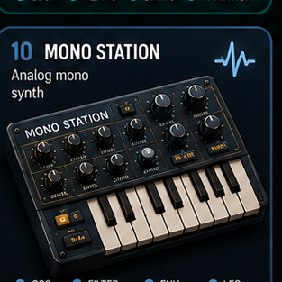

Mono Station
Single-voice synth page for oscillator, filter, envelope, and LFO control.
Layer: visual shell + playable placeholder tones.
Next build: replace tones with real samples/synth routing and quantized loop behavior.
Input: touch, mouse, and keyboard keys 1–4 / Q–R.